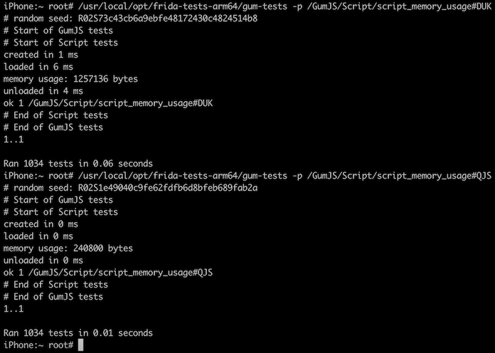

Frida 14.0 Released ∞
release oleavr
oleavr
Here’s a major new release that took weeks of intense coding, with way too many cups of coffee. But before we dive into it, we need to have a quick look down memory lane.
For years now our V8-based runtime has served us well. But eventually we needed to support constrained systems where V8 isn’t a great fit, so we introduced a second runtime.
This has worked out nicely, but there were some trade-offs we were left with:
- Language feature support being wildly different between the two runtimes. We tried to alleviate some of this by making the minimalistic runtime be the default, as it’s available everywhere and is the lowest common denominator in terms of features.
- Needing to sacrifice performance when using a tool such as frida-compile to compile modern JavaScript to old JavaScript that runs on both runtimes.
- Non-trivial agents with lots of code and data floating around make it clear not just how fast V8 is – no surprise there – but that it’s really good at packing objects to avoid wasting precious RAM. And to widen the gap between the two runtimes even more, V8 can run the modern JavaScript as-is and doesn’t need to run a bloated version that contains compatibility shims to fill in the missing runtime bits such as Map and Set.
- Example code and documentation tends to look arcane to avoid confusing users who might try to run modern code on the default runtime.
- Garbage collector implementation differences may hide the user’s bugs in one runtime that instantly blow up in the other where resources are released way more eagerly. One such example is failing to keep a NativeCallback alive while external code is still using it.
- Terrible UX: All of the above is a very frustrating and confusing story to tell our users.
- New features and refinements need to be implemented twice. This is a real pain for me as a maintainer for obvious reasons.
Fast-forward to 2019 and QuickJS caught my eye. I was really busy with other things at the time, though, so by the time I looked closer at it I noticed it supports ES2020, and also performs impressively well for an interpreter.
But as I started thinking about bringing up a new runtime from scratch, and seeing as the other two are roughly ~25 KLOC each, it just felt overwhelming.
I kept coming back to the QuickJS website though, devouring the technical details, and even started reading deeper into the public API at some point.
Then I noticed that it didn’t support cooperative multi-threaded use, where multiple threads execute JavaScript in lockstep. This made the mountain of work ahead feel even more daunting, but then I remembered that I’d already contributed support for this in Duktape, and it wasn’t that hard.
Eventually I mustered up the courage. Picked a super-simple test from GumJS’ extensive test-suite as my first challenge, and went ahead and copy-pasted the ScriptBackend and Script implementations from the youngest of the existing two runtimes. First renaming things, then stubbing out all of the modules (Interceptor, Stalker, etc.), just wanting to get a near-empty “shell” to compile and run.
At this point I was hooked and couldn’t stop. Lots of coffee was consumed, and before I knew it I’d gotten the core bits and the first module implemented. Then another, and then one more.
After working quite a bit with the QuickJS API, and jumping around its internals to make sure I understood the reference counting rules etc., it suddenly seemed really clear what was needed to implement the cooperative multi-threading API that would be needed to make this a real runtime and not just a toy.
What we need to be able to do is suspend JS execution while calling out to a NativeFunction. This is because the called function may block waiting for a lock which another thread might already be holding, but that other thread may have just called a hooked function and is waiting to enter the JS runtime. So if we didn’t let go of the JS lock before calling the NativeFunction, we’d now be in a deadlock.
Another use-case is calling Thread.sleep() or some other blocking API where we’d cause starvation if we did that while holding the JS lock.
Anyway, the QuickJS multi-threading API turned out to be straight-forward, so from there I kept on going, until it was all finally done! üéâ
At this point I was really curious about the performance of this brand new runtime, starting with the question of what it costs to enter and leave it.
Went ahead and took it for a spin on an iPhone 6, running the GumJS test that uses Interceptor to hook a nearly empty C function, supplying an empty JS callback, and then measures the wall-clock time spent on each call as it keeps calling the C function over and over.
The idea is to simulate what would happen if the user hooks a function that’s called frequently, to get an idea of the base overhead.
Here’s what I got:
# QuickJS
<min: 1.0 us, max: 7.0 us, median: 2.0 us> ok 1 /GumJS/Script/Interceptor/Performance/interceptor_on_enter_performance#QJS
<min: 2.0 us, max: 54.0 us, median: 2.0 us> ok 2 /GumJS/Script/Interceptor/Performance/interceptor_on_leave_performance#QJS
<min: 3.0 us, max: 18.0 us, median: 3.0 us> ok 3 /GumJS/Script/Interceptor/Performance/interceptor_on_enter_and_leave_performance#QJS
# Duktape
<min: 2.0 us, max: 8.0 us, median: 3.0 us> ok 4 /GumJS/Script/Interceptor/Performance/interceptor_on_enter_performance#DUK
<min: 2.0 us, max: 6.0 us, median: 3.0 us> ok 5 /GumJS/Script/Interceptor/Performance/interceptor_on_leave_performance#DUK
<min: 4.0 us, max: 89.0 us, median: 4.0 us> ok 6 /GumJS/Script/Interceptor/Performance/interceptor_on_enter_and_leave_performance#DUK
# V8
<min: 13.0 us, max: 119.0 us, median: 14.0 us> ok 7 /GumJS/Script/Interceptor/Performance/interceptor_on_enter_performance#V8
<min: 15.0 us, max: 127.0 us, median: 16.0 us> ok 8 /GumJS/Script/Interceptor/Performance/interceptor_on_leave_performance#V8
<min: 26.0 us, max: 198.0 us, median: 28.0 us> ok 9 /GumJS/Script/Interceptor/Performance/interceptor_on_enter_and_leave_performance#V8Wow, so that was looking promising! How about baseline memory usage, i.e. how much memory is consumed by one instance of the runtime itself?

That’s quite an improvement – only one fifth of the previous runtime!
The next thing I was curious about was the approximate initial size of Frida’s internal heap when using our REPL. That includes all of the memory used by frida-agent, the JS runtime, and the REPL agent that was loaded:

Yay, 1 MB freed up for other purposes!
So with that, I hope you’re as excited as I am about this new release. We’ve replaced our previous default runtime with this brand new one built on QuickJS.
And as an experiment I have also decided to build our official binaries without our V8 runtime. This means that the binaries are way smaller than they’ve ever been before.
I do realize that some of you may have use-cases where the V8 runtime is essential, so my hope is that you will take the new QuickJS runtime for a spin and let me know how it works for you. If it’s an absolute disaster for your particular use-case then don’t worry, just let me know and we will figure something out.
If you’d like to build Frida yourself with the V8 runtime enabled, it’s only a matter of tweaking this line. But please do let me know if you can’t live without it, so we can decide on whether we need to keep supporting this runtime down the road.
The only other change in this major release applies to i/macOS, where we’re
finally following Apple’s move to drop support for 32-bit programs. We’ll keep
the codepaths around for now though, but our official binaries have a lot less
fat, and the top-level build system is also a bit slimmer. E.g.
make core-macos-thin is now just make core-macos.
That’s all in Frida itself, but there’s more. We’ve also released frida-tools 9.0, freshly upgraded to make use of modern JavaScript features everywhere. That includes frida-trace, where the generated boilerplate hooks have become a lot more readable after some syntax upgrades. Last but not least we have also released frida-compile 10.0, where the Babel dependencies are gone and so are the corresponding command-line switches; it’s faster and so much simpler.
So with that, I hope you’ll enjoy this new release!
Changes in 14.0.0
- Replace the default runtime with a brand new GumJS runtime based on QuickJS.
- Disable V8 by default.
- Retain callback object in Interceptor.attach() on V8.
- Drop “enumerate” trap from the global access API.
Changes in 14.0.1
- QJS: Fix nested global access requests.
- qml: Update to the new frida-core API.
Changes in 14.0.2
- QJS: Keep NativeCallback alive during calls.
- QJS: Speed up the NativeCallback construction logic.
- QJS: Disable stack limitation for now.
- iOS: Port the iOS crash reporter integration to iOS 14.
- iOS: Remove packaging logic for 32-bit.
- Android: Use the default runtime for the “system_server” agent.
- Modernize internal JavaScript agents.
Changes in 14.0.3
- Disable V8 on Windows also.
- iOS: Improve the packaging script.
Changes in 14.0.4
- iOS: Fix arm64e regression caused by toolchain upgrade.
Changes in 14.0.5
- QJS: Fix Interceptor error-handling.
Changes in 14.0.6
- ObjC: Fix lifetime of replaced methods so they’re not tied to the class wrapper, and also kept alive in chaining use-cases. Kudos to @Hexploitable and @mrmacete for the assist!
- Fix Exceptor sigaction() registration failure when act == oact. Thanks @hluwa!
- Improve Linux libc detection.
- Fix intermittent hang when enumerating and modifying threads on Linux.
- Fix inconsistent PC vs CPSR Thumb bit handling.
- Fix build regressions on Linux/armhf and Linux/arm64.
- Publish binaries for Raspberry Pi 32- and 64-bit.
Changes in 14.0.7
- Avoid deadlocking in scenarios where we crash while executing JS code, e.g.
when calling out to a NativeFunction w/
exceptions: 'propagate', or in case of a bug in GumJS. Thanks @mrmacete! - Fix CModule on macOS/arm64.
- Publish Python and Node.js binaries for Raspberry Pi 32-bit.
- Publish binaries for Fedora 33 instead of Fedora 32.
- Publish binaries for Ubuntu 20.10.
Changes in 14.0.8
- Improve jailed iOS upload reliability by adding some bi-directional communication into the upload connection. This is to prevent DoS protections from kicking in during gadget upload in complex remote configurations. Thanks @mrmacete!